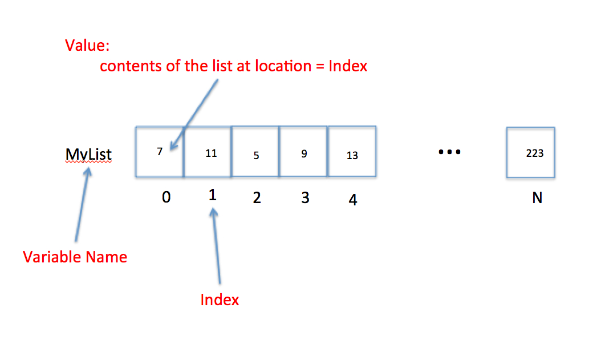

Download (right-click, save target as ...) this page as a jupyterlab notebook from:
Laboratory 3: Structures and Conditions.
# Preamble script block to identify host, user, and kernel
import sys
! hostname
! whoami
print(sys.executable)
print(sys.version)
print(sys.version_info)
DESKTOP-EH6HD63
desktop-eh6hd63\farha
C:\Users\Farha\Anaconda3\python.exe
3.7.4 (default, Aug 9 2019, 18:34:13) [MSC v.1915 64 bit (AMD64)]
sys.version_info(major=3, minor=7, micro=4, releaselevel='final', serial=0)
Full name:
R#:
Title of the notebook:
Date:

Data Structures: List (Array)
A list is a collection of data that are somehow related. It is a convenient way to refer to a collection of similar things by a single name, and using an index (like a subscript in math) to identify a particular item.
Consider the "math-like" variable below:
\begin{gather}
x_0= 7 \ x_1= 11 \ x_2= 5 \ x_3= 9 \ x_4= 13 \ ... \ x_N= 223 \
\end{gather}
The variable name is and the subscripts correspond to different values.
Thus the value of the variable named associated with subscript is the number .
The figure below is a visual representation of a the concept that treats a variable as a collection of cells.

In the figure, the variable name is MyList, the subscripts are replaced by an index
which identifies which cell is being referenced.
The value is the cell content at the particular index.
So in the figure the value of MyList at Index = 3 is the number 9.'
In engineering and data science we use lists a lot - we often call then vectors, arrays, matrices and such, but they are ultimately just lists.
To declare a list you can write the list name and assign it values. The square brackets are used to identify that the variable is a list. Like:
MyList = [7,11,5,9,13,66,99,223]
One can also declare a null list and use the append() method to fill it as needed.
MyOtherList = [ ]
Python indices start at ZERO. Alot of other lnguages start at ONE. Its just the convention.
The first element in a list has an index of 0, the second an index of 1, and so on. We access the contents of a list by referring to its name and index. For example
MyList[3] has a value of the number 9.
MyOtherList = [] #Create an empty list
MyOtherList.append(765) #Add one item to the list
print(MyOtherList)
MyList = [7,11,5,9,13,66,99,223] #Define a list
print(MyList)
sublist = MyList[3:6] #slice a sublist
print("sublist is: ", sublist)
mysum = sum(sublist) #sum the numbers in the sublist
print("Sum: ", mysum)
mylength = len(sublist) #get the length of the sublist
print("Length: ", mylength)
[765]
[7, 11, 5, 9, 13, 66, 99, 223]
sublist is: [9, 13, 66]
Sum: 88
Length: 3
Data Structures: Special List | Tuple
A tuple is a special kind of list where the values cannot be changed after the list is created. It is useful for list-like things that are static - like days in a week, or months of a year. You declare a tuple like a list, except use round brackets instead of square brackets.
MyTupleName = ("Jan","Feb","Mar","Apr","May","Jun","Jul","Aug","Sep","Oct","Nov","Dec")
Data Structures: Special List | Dictionary
A dictionary is a special kind of list where the items are related data PAIRS. It is a lot like a relational database (it probably is one in fact) where the first item in the pair is called the key, and must be unique in a dictionary, and the second item in the pair is the data. The second item could itself be a list, so a dictionary would be a meaningful way to build a database in Python.
To declare a dictionary using curly brackets
MyPetsNamesAndMass = { "Dusty":7.8 , "Aspen":6.3, "Merrimee":0.03}
To declare a dictionary using the dict() method
MyPetsNamesAndMassToo = dict(Dusty = 7.8 , Aspen = 6.3, Merrimee = 0.03)
Some examples follow:
MyTupleName = ("Jan","Feb","Mar","Apr","May","Jun","Jul","Aug","Sep","Oct","Nov","Dec")
MyTupleName
('Jan',
'Feb',
'Mar',
'Apr',
'May',
'Jun',
'Jul',
'Aug',
'Sep',
'Oct',
'Nov',
'Dec')
MyPetsNamesAndMass = { "Dusty":7.8 , "Aspen":6.3, "Merrimee":0.03}
print(MyPetsNamesAndMass)
MyPetsNamesAndMassToo = dict(Dusty = 7.8 , Aspen = 6.3, Merrimee = 0.03)
print(MyPetsNamesAndMassToo)
{'Dusty': 7.8, 'Aspen': 6.3, 'Merrimee': 0.03}
{'Dusty': 7.8, 'Aspen': 6.3, 'Merrimee': 0.03}
# Tuples
MyTupleName = ("Jan","Feb","Mar","Apr","May","Jun","Jul","Aug","Sep","Oct","Nov","Dec")
# Access a Tuple
print ("5th element of the tuple:", MyTupleName[4])
# Dictionary
MyPetsNamesAndMass = { "Dusty":7.8 , "Aspen":6.3, "Merrimee":0.03}
# Access the Dictionary
print ("Aspen's mass = ", MyPetsNamesAndMass["Aspen"])
# Change a value in a dictionary
print ("Merrimee's mass" , MyPetsNamesAndMass["Merrimee"])
MyPetsNamesAndMass["Merrimee"] = 0.01
print ("Merrimee's mass" , MyPetsNamesAndMass["Merrimee"], "She lost weight !")
# Alternate dictionary
MyPetsNamesAndMassToo = dict(Dusty = 7.8 , Aspen = 6.3, Merrimee = 0.03)
print ("Merrimee's mass" , MyPetsNamesAndMassToo["Merrimee"])
# Attempt to change a Tuple
#MyTupleName[3]=("Fred") # Activate this line and see what happens!
5th element of the tuple: May
Aspen's mass = 6.3
Merrimee's mass 0.03
Merrimee's mass 0.01 She lost weight !
Merrimee's mass 0.03
Example: Nested Dictionary
From the dictionary below, print "Pandemic" and "Tokyo":
FD = {"Quentin":"Tarantino","2020":[2020,"COVID",19,"Pandemic"],"Bond":["James","Gun",("Paris","Tokyo","London")]} #A nested dictionary
print(FD)
{'Quentin': 'Tarantino', '2020': [2020, 'COVID', 19, 'Pandemic'], 'Bond': ['James', 'Gun', ('Paris', 'Tokyo', 'London')]}
FD['2020'][3]
'Pandemic'
FD['Bond'][2][1]
'Tokyo'

Conditional Execution
Conditional statements are logical expressions that evaluate as TRUE or FALSE and using these results to perform further operations based on these conditions. All flow control in a program depends on evaluating conditions. The program will proceed diferently based on the outcome of one or more conditions - really sophisticated AI programs are a collection of conditions and correlations. Amazon knowing what you kind of want is based on correlations of your past behavior compared to other peoples similar, butmore recent behavior, and then it uses conditional statements to decide what item to offer you in your recommendation items. It's spooky, but ultimately just a program running in the background trying to make your money theirs.
Conditional Execution: Comparison
The most common conditional operation is comparison. If we wish to compare whether two variables are the same we use the == (double equal sign).
For example x == y means the program will ask whether x and y have the same value. If they do, the result is TRUE if not then the result is FALSE.
Other comparison signs are != does NOT equal, < smaller than, >larger than, <=less than or equal, and >= greater than or equal.
There are also three logical operators when we want to build multiple compares
(multiple conditioning); these are and, or, and not.
The and operator returns TRUE if (and only if) all conditions are TRUE.
For instance 5 == 5 and 5 < 6 will return a TRUE because both conditions are true.
The or operator returns TRUE if at least one condition is true.
If all conditions are FALSE, then it will return a FALSE. For instance 4 > 3 or 17 > 20 or 3 == 2 will return TRUEbecause the first condition is true.
The not operator returns TRUE if the condition after the not keyword is false. Think of it
as a way to do a logic reversal.
# Compare
x = 7
y = 10
print("x =: ",x,"y =: ",y)
print("x is equal to y : ",x==y)
print("x is not equal to y : ",x!=y)
print("x is greater than y : ",x>y)
print("x is less than y : ",x<y)
x =: 7 y =: 10
x is equal to y : False
x is not equal to y : True
x is greater than y : False
x is less than y : True
# Logical operators
print("5 == 5 and 5 < 6 ? ",5 == 5 and 5 < 6)
print("4 > 3 or 17 > 20 ",4 > 3 or 17 > 20)
print("not 5 == 5",not 5 == 5)
5 == 5 and 5 < 6 ? True
4 > 3 or 17 > 20 True
not 5 == 5 False
Conditional Execution: Block if statement

The if statement is a common flow control statement.
It allows the program to evaluate if a certain condition is satisfied and to perform a designed action based on the result of the evaluation. The structure of an if statement is
if condition1 is met:
do A
elif condition 2 is met:
do b
elif condition 3 is met:
do c
else:
do e
The elif means "else if". The : colon is an important part of the structure it tells where the action begins. Also there are no scope delimiters like (), or {} .
Instead Python uses indentation to isolate blocks of code.
This convention is hugely important - many other coding environments use delimiters (called scoping delimiters), but Python does not. The indentation itself is the scoping delimiter.
The next code fragment illustrates illustrates how the if statements work. The program asks the user for input. The use of raw_input() will let the program read any input as a string
so non-numeric results will not throw an error.
The input is stored in the variable named userInput.
Next the statement if userInput == "1": compares the value of userInput
with the string "1". If the value in the variable is indeed \1", then the program will execute
the block of code in the indentation after the colon.
In this case it will execute
print "Hello World"
print "How do you do? "
Alternatively, if the value of userInput is the string '2', then the program will execute
print "Snakes on a plane "
For all other values the program will execute
print "You did not enter a valid number"
# Block if example
userInput = input('Enter the number 1 or 2')
# Use block if structure
if userInput == '1':
print("Hello World")
print("How do you do? ")
elif userInput == '2':
print("Snakes on a plane ")
else:
print("You did not enter a valid number")
Enter the number 1 or 21
Hello World
How do you do?
Conditional Execution: Inline if statement
An inline if statement is a simpler form of an if statement and is more convenient if you
only need to perform a simple conditional task.
The syntax is:
do TaskA `if` condition is true `else` do TaskB
An example would be
myInt = 3
num1 = 12 if myInt == 0 else 13
num1
An alternative way is to enclose the condition in brackets for some clarity like
myInt = 3
num1 = 12 if (myInt == 0) else 13
num1
In either case the result is that num1 will have the value 13 (unless you set myInt to 0).
One can also use if to construct extremely inefficient loops.
myInt = 0
num1 = 12 if (myInt == 0) else 13
num1
12
Example: Pass or Fail?
Take the following inputs from the user:
1. Grade for Lesson 1 (from 0 to 5)
2. Grade for Lesson 2 (from 0 to 5)
3. Grade for Lesson 3 (from 0 to 5)
Compute the average of the three grades. Use the result to decide whether the student will pass or fail.
Lesson1 = int(input('Enter the grade for Lesson 1'))
Lesson2 = int(input('Enter the grade for Lesson 2'))
Lesson3 = int(input('Enter the grade for Lesson 3'))
Average = int(Lesson1+Lesson2+Lesson3)/3
print('Average Course Grade:',Average)
if Average >= 5:
print("Passed")
else:
print("Failed")
Enter the grade for Lesson 12
Enter the grade for Lesson 25
Enter the grade for Lesson 31
Average Course Grade: 2.6666666666666665
Failed

Here are some great reads on this topic:
- "Common Python Data Structures (Guide)" by Dan Bader available at https://realpython.com/python-data-structures/
- "Data Structures You Need To Learn In Python" by Akash available at https://www.edureka.co/blog/data-structures-in-python/
- "Data Structures in Python— A Brief Introduction" by Sowmya Krishnan available at https://towardsdatascience.com/data-structures-in-python-a-brief-introduction-b4135d7a9b7d
- "Everything you Should Know About Data Structures in Python" by ANIRUDDHA BHANDARI available at https://www.analyticsvidhya.com/blog/2020/06/data-structures-python/
- "Conditional Statements in Python" by John Sturtz available at https://realpython.com/python-conditional-statements/
- "Python If Statement explained with examples" by CHAITANYA SINGH available at https://beginnersbook.com/2018/01/python-if-statement-example/
Here are some great videos on these topics:
- "Python: Data Structures - Lists, Tuples, Sets & Dictionaries tutorial" by Joe James available at https://www.youtube.com/watch?v=R-HLU9Fl5ug&t=92s
- "Python Tutorial for Beginners 5: Dictionaries - Working with Key-Value Pairs" by Corey Schafer available at https://www.youtube.com/watch?v=daefaLgNkw0
- "How to Use If Else Statements in Python (Python Tutorial #2)" by CS Dojo available at https://www.youtube.com/watch?v=AWek49wXGzI
- "Python If Statements | Python Tutorial #10" by Amigoscode available at https://www.youtube.com/watch?v=wKQRmXR3jhc

Exercise: Why dictionaries?
Why do we need to use dictionaries in python?
* Make sure to cite any resources that you may use.